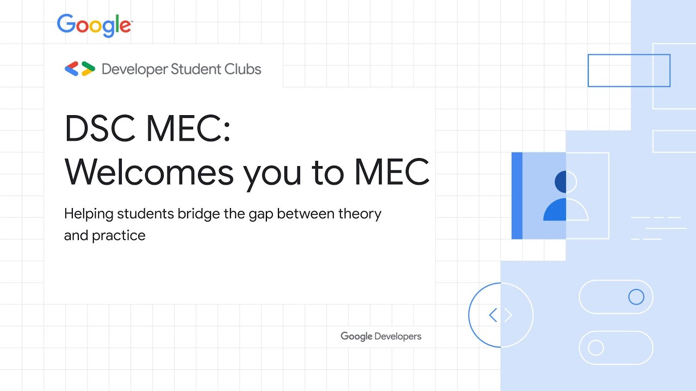

About Us

Developer Student Club MEC is a community group for students interested in Google developer technologies. DSC MEC offers you a hearty welcome and extends an invitation to those who would be our future aspiring developers, with their eyes set on shattering boundaries and creating new ceilings to break!. We are a community-based club that focuses on helping you progress on this journey and helping you breathe life into your projects. By joining a DSC, students like you, get to grow their knowledge in a peer-to-peer learning environment and build solutions for local businesses and their community.